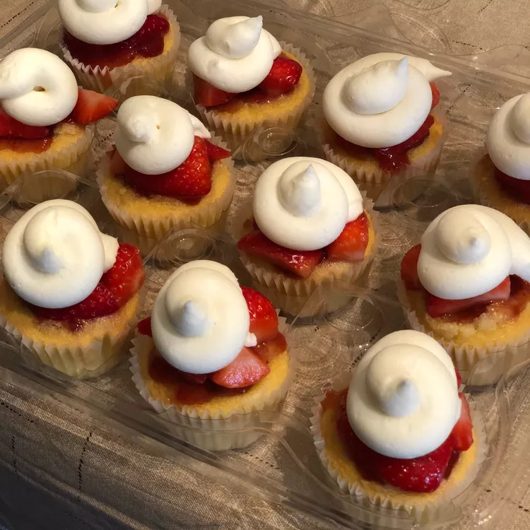

Home
Strawberry Shortcake Cupcakes

Delicious Strawberry Shortcake Cupcakes with Homemade Whipped Cream!
The flavors of strawberry shortcake, in cupcake-form! Can be made even easier by prepping the day before a party. The final, assembled cupcakes can be stored in the fridge up to an hour before serving.
Ingredients:
Cupcakes:
- 1 (18.25 ounce) box yellow cake mix (such as Betty Crocker®)
- 1 cup water
- 3 eggs
- ½ cup vegetable oil
- 7 tablespoons strawberry jam
Strawberry Topping:
- 1 pound fresh strawberries, hulled and quartered
- 3 tablespoons white sugar
- 2 teaspoons lemon juice
Whipped Cream
- 2 cups heavy whipping cream
- 3 tablespoons confectioners' sugar
- 1 tablespoon vanilla extract
Directions:
- Preheat oven to 350 degrees F (175 degrees C). Grease 12 muffin cups or line with paper liners.
- Beat cake mix, water, eggs, and oil together in a bowl using an electric mixer on low speed for 30 seconds; increase speed to medium and beat until batter is smooth, about 2 minutes more. Spoon batter into the prepared muffin cups.
- Bake in the preheated oven until a toothpick inserted in the center comes out clean, 12 to 17 minutes. Cool cupcakes in the tin for 5 minutes.
- Stir strawberry jam in a bowl until it reaches a smooth and spreadable texture. Spread a thin layer of jam onto each cupcake. Refrigerate cupcakes until jam has set into the cake, 3 hours to overnight.
- Mix strawberries, white sugar, and lemon juice together in a bowl until evenly combined; refrigerate until strawberries are slightly broken down, at least 3 hours.
- Beat cream, confectioners' sugar, and vanilla extract together in a bowl using an electric mixer until soft peaks form and whipped cream is light and fluffy.
- Top each cupcake with 3 or 4 slices strawberry and about 2 tablespoons whipped cream.
Cook's Notes:
Be sure to not overbake the cupcakes.
The cupcakes can be prepped the day ahead, as well as the macerated berries, but not the whipped cream. Prepare the whipped cream no later than 2 hours before serving cupcakes.
Be sure the beaters, bowl, and cream are all very cold or the cream will not whip. If you prefer a sweeter whipped cream, add more sugar, though the berries should be sweet on their own.